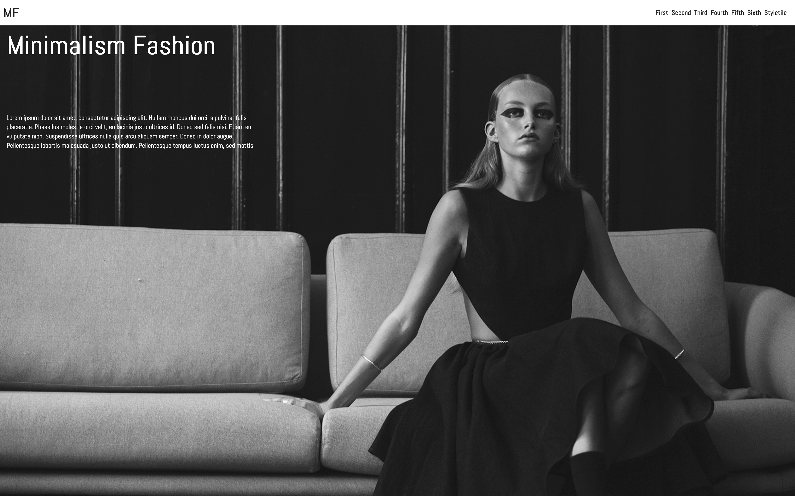

Grundlæggende web
Produktion af responsive website ved grundlæggende brug af Html og CSS
I tema - 2 blev vi introduceret til forskellige værktøjer og arbejdsproteser for hvordan man laver en hjemmeside og forløbet bag, fra start til slut.
Dette indeholdte ide og udviklnings fasen, hvor vi starter med at finde på en ide ved hjælp af forkelige værktøjer til Ide udviklning.
Derefter begynder vi på at skabe den stil som vi godt vil lave for vores design.
Det gør vi ved at skabe en design identiet for vores færdige produkt, til det bruger vi at lave et Stiletyle og et Moodboard, på den måde får vi et stil udgangs punkt.
Næste step er at lave en protpype så vi ved hvad vi skal programmere, men først skal vi have lavet et wireframe så vi kan få en visuel ide om hvor tingene på vores side skal placeret, her tænker vi kun på html elementer, her kan man vælge at lave lowfadelety som man tegner i hånden eller lave den i adobe XD.
Når vi har gjort det kan vi gå viedre og lave det til en prototype.
Det er sådan vi gerne vil have vores design ser ud men her har vi kun sat det op i adobe xd, så vi let kan rette på det, men vi kan også bruge adobe xd til at sende en protoype ud som vi kan lave test på. - Det kun være fx spøgveundersøgelse.
Når vi har modtaget vores feedback kan vi ænder i vores XD fil og gå vidre til at lave de sidste forberedelser før vi skal kode i vscode.
Her bruger vi Html til at bygge det hele op med og CSS til at style vores Html.
Kompetance liste
- Adobe Photoshop
- Adobe XD
- VS Code
- Moodboard
- Styletyle
02.04.02 responsive_site_v2
Her for du et indblik i hvordan læringen er blevet omsat til handling og et produkt.